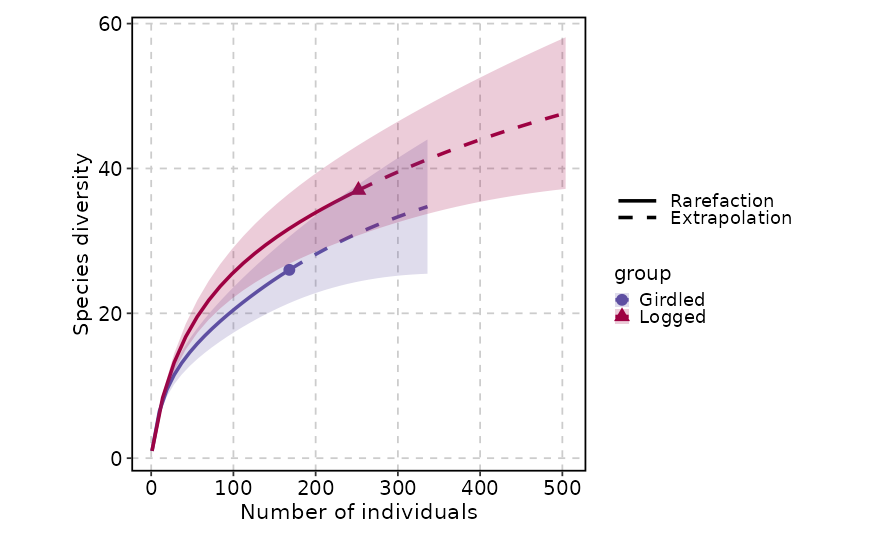
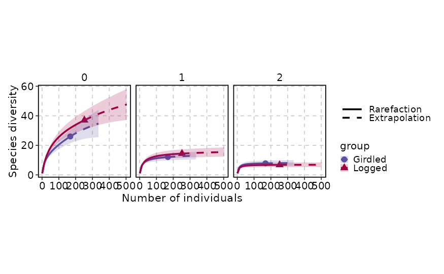
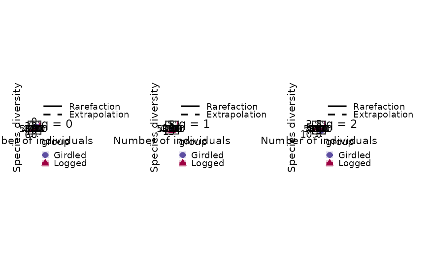
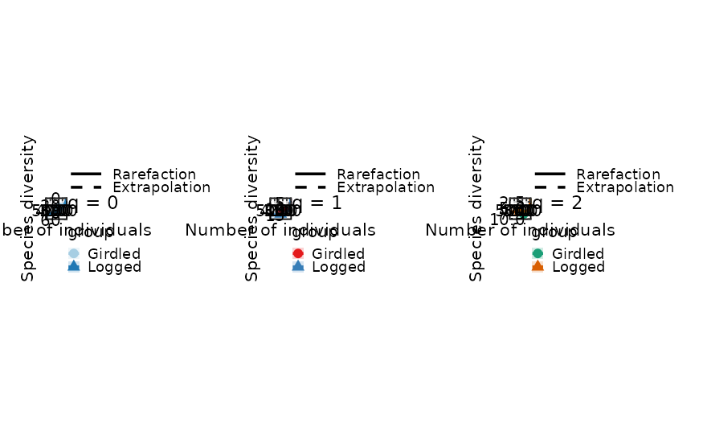
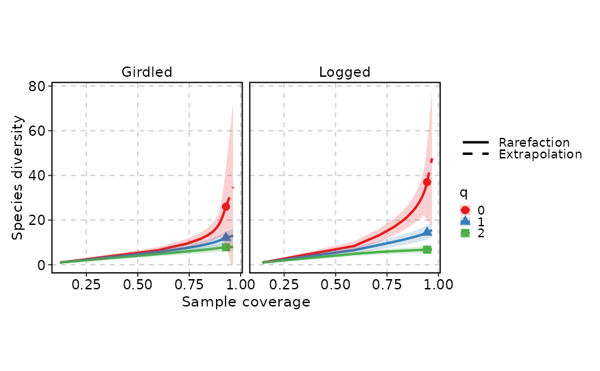

Draws rarefaction and extrapolation curves for biodiversity data using the
iNEXT package. Accepts raw species-abundance / incidence-frequency
lists (which are passed to iNEXT() for estimation) or
pre-computed iNEXT objects.
The function supports three curve types (sample-size-based, sample
completeness, and coverage-based), diversity orders (q), per-group
colouring, faceting, and splitting into separate sub-plots via
split_by. Observed data are marked with points, rarefaction lines
are solid, and extrapolation segments are dashed. Confidence intervals are
shown as semi-transparent ribbons.
Usage
RarefactionPlot(
data,
type = 1,
se = NULL,
group_by = "group",
group_by_sep = "_",
group_name = NULL,
split_by = NULL,
split_by_sep = "_",
theme = "theme_this",
theme_args = list(),
palette = "Spectral",
palcolor = NULL,
palreverse = FALSE,
alpha = 0.2,
pt_size = 3,
line_width = 1,
facet_by = NULL,
facet_scales = "fixed",
facet_ncol = NULL,
facet_nrow = NULL,
facet_byrow = TRUE,
aspect.ratio = 1,
legend.position = "right",
legend.direction = "vertical",
title = NULL,
subtitle = NULL,
xlab = NULL,
ylab = NULL,
seed = 8525,
combine = TRUE,
nrow = NULL,
ncol = NULL,
byrow = TRUE,
axes = NULL,
axis_titles = axes,
guides = NULL,
design = NULL,
...
)Arguments
- data
A data frame.
- type
An integer specifying the curve type:
1for sample-size-based rarefaction/extrapolation,2for sample completeness, or3for coverage-based rarefaction/extrapolation. A vector of types can be passed and the data will be fortifed for all of them; faceting or splitting then separates the panels. Default:1.- se
A logical value indicating whether to display confidence intervals as semi-transparent ribbons around the estimated curve. When
NULL(the default), it resolves toTRUEif the fortifed data containsy.lwrandy.uprcolumns, andFALSEotherwise.- group_by
Columns to group the data for plotting For those plotting functions that do not support multiple groups, They will be concatenated into one column, using
group_by_sepas the separator- group_by_sep
A character string used to join multiple
group_bycolumn values whengroup_byhas length > 1. Also used by the exported function for the group concatenation. Default:"_".- group_name
A character string used as the title for the colour (and shape) legend. When
NULL(the default), the value ofgroup_byis used.- split_by
A character vector specifying how to split the data into separate sub-plots. Must be one or both of
"q"(diversity order) and"group"(assemblage/site). Multiple values are concatenated withsplit_by_sep. Cannot overlap withgroup_byorfacet_by. Default:NULL.- split_by_sep
A character string used to join multiple
split_bycolumn values whensplit_byhas length > 1. Default:"_".- theme
A character string or a theme class (i.e. ggplot2::theme_classic) specifying the theme to use. Default is "theme_this".
- theme_args
A list of arguments to pass to the theme function.
- palette
A character string specifying the palette to use. A named list or vector can be used to specify the palettes for different
split_byvalues.- palcolor
A character string specifying the color to use in the palette. A named list can be used to specify the colors for different
split_byvalues. If some values are missing, the values from the palette will be used (palcolor will be NULL for those values).- palreverse
A logical value indicating whether to reverse the palette. Default is FALSE.
- alpha
A numeric value specifying the transparency of the plot.
- pt_size
A numeric value specifying the size of the observed-data points. Default:
3.- line_width
A numeric value specifying the width of the rarefaction / extrapolation lines. Default:
1.- facet_by
A character string specifying the column name of the data frame to facet the plot. Otherwise, the data will be split by
split_byand generate multiple plots and combine them into one usingpatchwork::wrap_plots- facet_scales
Whether to scale the axes of facets. Default is "fixed" Other options are "free", "free_x", "free_y". See
ggplot2::facet_wrap- facet_ncol
A numeric value specifying the number of columns in the facet. When facet_by is a single column and facet_wrap is used.
- facet_nrow
A numeric value specifying the number of rows in the facet. When facet_by is a single column and facet_wrap is used.
- facet_byrow
A logical value indicating whether to fill the plots by row. Default is TRUE.
- aspect.ratio
A numeric value specifying the aspect ratio of the plot.
- legend.position
A character string specifying the position of the legend. if
waiver(), for single groups, the legend will be "none", otherwise "right".- legend.direction
A character string specifying the direction of the legend.
- title
A character string specifying the title of the plot. A function can be used to generate the title based on the default title. This is useful when split_by is used and the title needs to be dynamic.
- subtitle
A character string specifying the subtitle of the plot.
- xlab
A character string specifying the x-axis label.
- ylab
A character string specifying the y-axis label.
- seed
A numeric seed for reproducibility. Passed to
validate_common_args(). Default:8525.- combine
Logical; when
TRUE(default), returns a combinedpatchworkobject. WhenFALSE, returns a named list of individualggplotobjects.- ncol, nrow
Integer number of columns / rows for the combined layout (passed to
wrap_plots).- byrow
Logical; fill the combined layout by row. Default
TRUE.- axes
A character string specifying how axes should be treated across the combined layout (passed to
combine_plots()).- axis_titles
A character string specifying how axis titles should be treated across the combined layout. Defaults to
axes.- guides
A character string specifying how guides (legends) should be collected across panels (passed to
combine_plots()).- design
A custom layout design for the combined plot (passed to
combine_plots()).- ...
Additional arguments passed to
iNEXTwhendatais not already aniNEXTobject. Common options includeq(diversity order, defaultc(0, 1, 2)),datatype("abundance"or"incidence"), andnboot(number of bootstrap replicates).
Value
A ggplot object (single split), a patchwork object
(multiple splits with combine = TRUE), or a named list of
ggplot objects (when combine = FALSE), each with
height and width attributes in inches.
split_by workflow
When split_by is provided:
validate_common_args()checks theseedandfacet_byvalidity.The
typeargument is validated (must be one or more of 1, 2, 3).group_by,split_by, andfacet_byare validated for allowed values ("q"and/or"group") and checked for mutual exclusivity — no parameter may overlap with another.If
datais not aniNEXTobject, it is passed toiNEXT()with...(which may containq,datatype,nboot, etc.).The
iNEXTobject is fortifed viafortify()for the requestedtypes. ColumnsAssemblageandOrder.qare renamed togroupandq, respectively.The
separameter is resolved: ifNULLit becomesTRUEwhen the fortifed data containsy.lwr/y.uprcolumns.A
ltycolumn is created (factor with levels"Rarefaction"and"Extrapolation") to distinguish the two line phases via solid / dashed linetypes.group_by,split_by, andfacet_byare processed viacheck_columns()withforce_factor = TRUEand multi-column concatenation.If
group_byisNULL, a dummy".group"column is created and the legend is hidden.The data is split by
split_by(preserving level order). Ifsplit_byisNULL, the data is wrapped in a single-element list with name"...".Per-split
palette,palcolor,legend.position, andlegend.directionare resolved viacheck_palette(),check_palcolor(), andcheck_legend().RarefactionPlotAtomic()is called for each split. Iftitleis a function, it receives the split level name and can generate dynamic titles.Results are combined via
combine_plots()(whencombine = TRUE) or returned as a named list.
Examples
# \donttest{
set.seed(8525)
spider <- list(
Girdled = c(46, 22, 17, 15, 15, 9, 8, 6, 6, 4, rep(2, 4), rep(1, 12)),
Logged = c(88, 22, 16, 15, 13, 10, 8, 8, 7, 7, 7, 5, 4, 4, 4, 3, 3, 3, 3,
2, 2, 2, 2, rep(1, 14))
)
# Basic sample-size-based rarefaction (type = 1)
RarefactionPlot(spider)

# Multiple diversity orders with faceting
RarefactionPlot(spider, q = c(0, 1, 2), facet_by = "q")

# Multiple diversity orders split into sub-plots
RarefactionPlot(spider, q = c(0, 1, 2), split_by = "q")

# Per-split palettes
RarefactionPlot(spider, q = c(0, 1, 2), split_by = "q",
palette = c("0" = "Paired", "1" = "Set1", "2" = "Dark2"))

# Coverage-based rarefaction (type = 3) with
# group_by = "q" and facet_by = "group"
RarefactionPlot(spider, q = c(0, 1, 2), group_by = "q",
facet_by = "group", palette = "Set1", type = 3)

# }